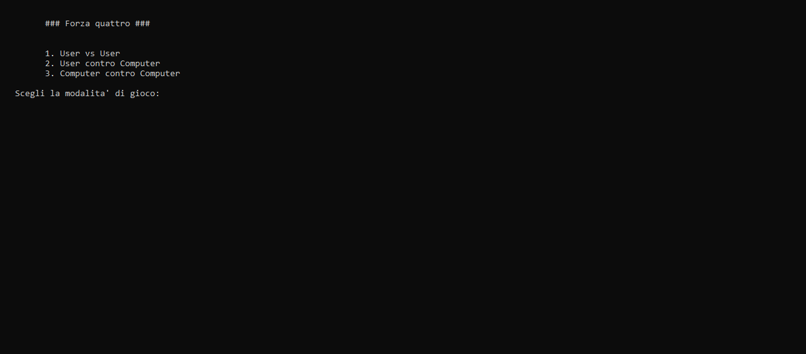
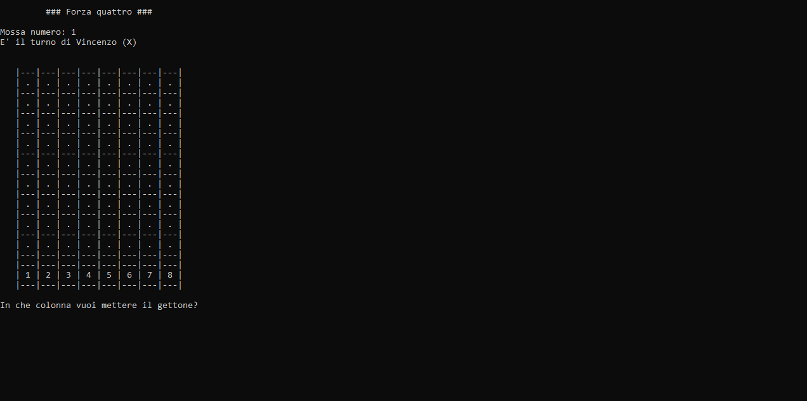
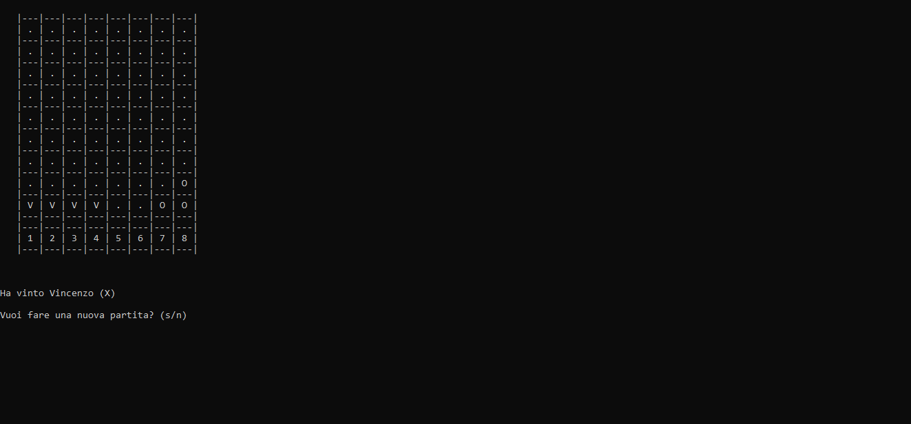
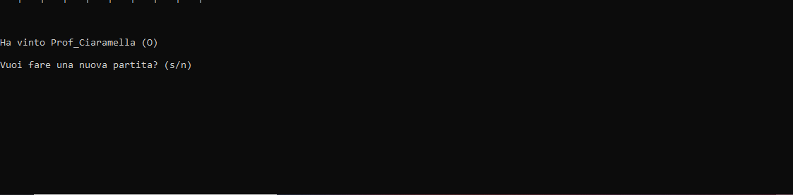

Gioco del "Forza 4"
Primo Test

Di seguito viene mostrata la griglia da gioco con le celle occupate dalle mosse dei giocatori con delle "X" e "O" in cui simulano le pedine che vengono fatte
cadere lungo una griglia verticale


Successivamente aver determinato il vincitore viene richiesto se si vuole iniziare una nuova partita (S) o terminare (N).
